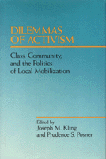

Focusing on three dilemmas that inherently shape the issues and strategies around which people mobilize
Focusing on three dilemmas that inherently shape the issues and strategies around which people mobilize


 Focusing on three dilemmas that inherently shape the issues and strategies around which people mobilize
Focusing on three dilemmas that inherently shape the issues and strategies around which people mobilize

|  |
Dilemmas of ActivismClass, Community, and the Politics of Local Mobilizationedited by Joseph M. Kling and Prudence S. Posnercloth EAN: 978-0-87722-696-3 (ISBN: 0-87722-696-2) |
Through the 1980s, collective resistance to conditions of economic deprivation, social insecurity, and political control have become more parochial, fragmented, and reactive, rather than transformational. In order to challenge these trends activists need to sort through the understanding and practice they bring to their work in communities and organizations. The essays in Dilemmas of Activism contribute to that reexamination. Focusing on three dilemmas that inherently shape the issues and strategies around which people mobilize, the contributors look at the ways in which both class and community create frameworks for activism at the local level.
Preface
Introduction – Prudence S. Posner
Part I: Figuring It Out: Theoretical Frameworks for Activism
Class and Community in an Era of Urban Transformation – Joseph M. Kling and Prudence S. Posner
The American Working Class and the Community-Workplace Dichotomy: Selections from the Writings of Ira Katznelson – edited by Prudence S. Posner
Ideology and Activism: Two Approaches to "Leading the People" – Robert Fisher and Joseph M. Kling
Family and Class in Contemporary America: Notes toward an Understanding of Ideology – Rayna Rapp
The Politics of Black Empowerment in Urban America: Reflections on Race, Class, and Community – James Jennings
Part II: Where the Action Is: Issues and Community Activism
New Wine in Old Bottles: Southern Populism and the Dilemmas of Class, Ideology, and State Power – Bruce Palmer
The Perils of Petty Production: The Agricultural Crisis – Rona Weiss
Two Roads Left: Strategies of Resistance to Plant Closings in the Monongahela Valley – Sidney Plotkin and William E. Scheuerman
Enclave Consciousness and Neighborhood Activism – Sidney Plotkin
The Agony and the Equity: Strategies for Building Low-Income Housing – Tony Schuman
Changing the Conversation: Reconstructing Public Discourse about Education – Svi Shapiro
Working Class Women, Social Protest, and Changing Ideologies – Ida Susser
Transformative Populism and the Development of a Community of Color – Marie Kennedy and Chris Tilly with Mauricio Gaston
Joseph M. Kling is Assistant Professor in the Department of Government at St. Lawrence University.
Prudence S. Posner, formerly Director or Research and Publication at the United Community Centers in Brooklyn, is now Director of the Liberty Partnership Program of the Associated Colleges of the St. Lawrence Valley.
Political Science and Public Policy
Sociology
© 2015 Temple University. All Rights Reserved. This page: http://www.temple.edu/tempress/titles/655_reg.html.